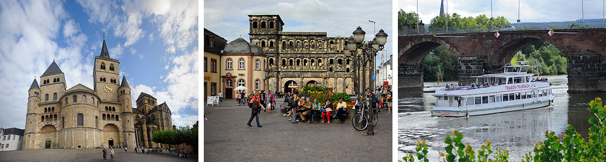
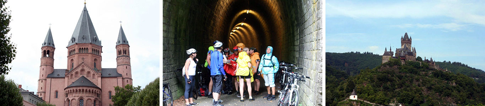
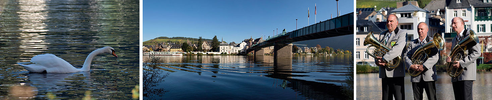
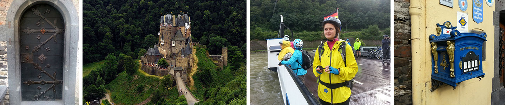
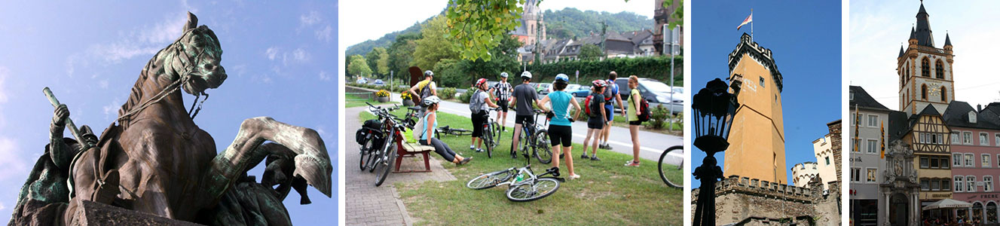
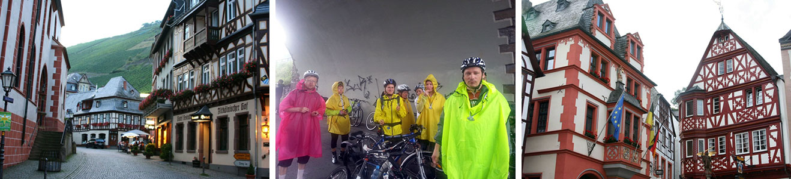

"Так идет весёлый Дидель
с палкой, птицей и котомкой,
через Гарц, поросший лесом,
вдоль по рейнским берегам.
По Тюрингии дубовой, по Саксонии сосновой,
по Вестфалии бузинной, по Баварии хмельной..."

Велика Германия, а отступать некуда... Нет, не то. А, вот: велика Германия, и за один раз пройти ее маршрутом веселого Диделя несколько затруднительно, но мы прокатимся по Вестфалии бузинной, вдоль по рейнским берегам, по берегам Мозеля и финишируем в городе Висбаден, столь милом русскому сердцу.
Чем интересны берега Рейна и Мозеля? Эти реки служили древними дорогами, пересекавшими Европу с юга на север. Соответственно, по берегам рек возникали поселения, а уже в римское время – укрепленные города.
Например, Трир – основанный императором Августом (тем самым, римским) в 16-ом году до нашей эры. Здесь была одна из резиденций Императора, в городе до сих пор сохранились римские постройки. Трир - самый древний город Германии, достопримечательности которого занесены в анналы ЮНЕСКО. При Константине Великом тут была столица (одна из) империи, а в Трирском соборе хранятся христианские реликвии, такие как голова святой Елены, хитон господень...
Маршрут проходит вдоль рек, которые в свою очередь рассекают холмистую местность. Мозель делает удивительные петли. Иногда река течет без малого двадцать километров, чтобы вернуться на расстояние в 4-5 км от предыдущей петли. Места очень красивые: река, крутые берега поросшие лесом, временами встречаются старинные городки, и… десятки замков. Местная аристократия ценила красивые виды на долину реки.
Заметим еще, что река Мозель центр виноградарства. Здешний климат способствует тому, что известные сорта винограда здесь имеют несколько иной вкус. Местный Рислинг не сравнить с рислингами, произведенными в других местностях. После визита в эти края вы с пониманием будете читать в художественной литературе про то, что тот или иной герой выпил Мозельского. Есть и негативная сторона: выработав привычку к мозельскому, трудно вернуться обратно к кислятине...
Маршрут не является технически сложным, проходит по системе немецких национальных и европейских веломаршрутов. Размещение в гостиницах по 2 человека в номере.
Первый день.
Не самый интересный на маршруте: перелет в аэропорт, переезд на поезде в Трир, размещение в гостинице, сборка и проверка велосипедов… .Обращу ваше внимание: Трир - почти что город побратим Ленинграда. Трир - колыбель Карла Маркса, а Ленинград – трех революций именем его освященных. Но основной интерес представляет не особняк родителей защитника интересов рабочего класса в центре города, а римские постройки, среди которых знаменитая Порта Нигра (фото справа). Это римская постройка, которая уже стоит две тысячи лет без малого... Что из построек века двадцатого простоит до 4015 года нашей эры? Порта Нигра была возведена без применения цемента (вероятно близко подходить к ней не стоит) в 180 году нашей эры и является самой крупной подобной постройкой в мире. Из дошедших до наших дней.
В Трире много и других достопримечательностей: древний мост через Мозель, и замечательные красные скалы на северном берегу Мозеля.
День второй. 60 км. Трир - Bernkastel-Kues
Покинув шумноватый Трир, проехав мимо красивых красных скал, мы выйдем, наконец, на маршрут вдоль Мозеля. Красоты Германии начинаются. Мы пишем петли вместе с рекой, иногда залезаем на близлежащие холмы. Вечером нас ждет жемчужина маршрута, город Бернкастел Кюес, с двумя замками, узенькими улочками и дегустационными залами. Именно в Бернкастеле, полагают знатоки Мозеля, самые красивые виды реки. Я с ними согласен.
Уже в этот день мы встретимся с самой распространенной проблемой, которая будет нас преследовать по всему маршруту – хочется провести в каждой местной деревеньке дня по два… Жаль, что это не реально. Замки и фахверковые дома, узкие улочки, крутые холмы…
День третий. Bernkastel-Kues - Целль. 50 км.

Сегодня нам предстоит проехать 50 километров. И это будут одни из красивейших километров, что можно проехать вообще на нашей планете. Вокруг - пейзажи долины Мозеля, которая именно тут извилистее всего. Ничего нового не обещаем: опять река, опять замки (замечу, что на Рейне и Мозеле их более сотни), и чудесные городки. Траббен Трарбах, Белстайн.. Что ни поселок, то хочется бросить все, и поселится тут в фахверковом домике 16 века, с цветами в клумбах на небольшой газончике... После велосипедного дня можно провести дегустацию в одном из местных дегустационных залов.
Целль - очень живописен, так как располагается в месте, где река делает довольно крутой изгиб, и может быть, именно поэтому, особенно красива.
День четвертый. Целль - Cochem - Treis Karden. 51 км.
Путешествие вдоль Мозеля продолжается. Итак, река то слева, то справа, дорожка вьется над рекой, вокруг леса и вноградники. Кстати, город Кохем, в котором начнется сегодняшний день, считается винодельческой столицей края. В Кохеме на высокой горе стоит имперский замок. В замке том была цепь. Не золотая, а металлическая. И висела она не на дубе, а на реке. Было удобно: цепь подняли - корабли вынуждены остановиться. А далее, понятно, досмотр, налоги, сборы, акцизы, пенни, штрафы, и все в казну. Ну или немножко мимо казны. А если есть вопросы, то на стенах замка стоят орудия. Красивое место и интересный музей.
День пятый. Treis Karden Cochem - Кобленц. 53 км.
Вечером мы прибудем в город Кобленц, стоящий на слиянии Мозеля и Рейны. А жемчужиной дня станет визит к замку Эльц, одному из самых красивых на маршруте. http://www.strana-naoborot.com/2oth/germ/eltz.htm . Правда к замку, придется прогуляться пешком по живописной дорожке. Замок Эльц принадлежит семье Эльц, или, более по-русски, Ельц.
Ельцины владения простираются от замка на окрестные леса, но замок открыт для посетителей. Сам нынешний главный Ельц живет в другом месте. На мой взгляд, этот тип замков самый красивый – когда башенки и строения хаотически натыканы без какого либо единого плана. Получается эклектично, но очень красиво. Подробнее (на английском языке) http://www.burg-eltz.de/e_index.html
В Кобленце много интересного. Во-первых огромная статуя Фридриха, стоящая на стрелке Мозеля и Рейна. Есть в ней что-то мрачное, страшное. Дух местности передает. Еще передает дух местности постамент памятника наполеоновского времени. Тогда решили воздвигнуть памятник победам Наполеона, поставить его в Кобленце напротив базаилики святого Кастора. Сделали постамент, выбили на нем "Наполеону - Победителю". 1 января 1814 года Кобленц был занят русскими войсками, и на нем выбили вторую надпись: "Рассмотрено - утверждено". Командующий русскими войсками видать был не без чувства юмора.
День шестой. Кобленц - Бахарах. 55 км
Мы покидаем Кобленц и едем теперь на юг, вдоль могучего Рейна. Вроде бы реки рядом, но очень отличаются. Мозель – небольшая уютная река, Рейн – велик и могуч! На нашем пути самые знаменитые достопримечательности Рейна. Замок Штользенфельц, скала Лорели, городок Sankt-Goar.
Изюминкой на маршруте является град Бахарах. Это маленький городок, уютно притулившийся меж горами и величавым Рейном. Очередной город - сказка. Вахрверк, остатки старинных стен. Вечером хорошо посидеть в ресторанчике в одном из фахрверковых домов, прогуляться по набережной Рейна. Кстати на одном из домов красуется надпись 1347. В это трудно поверить, но так: дом 1347 года постройи.
День седьмой. Бахарах - Висбаден. 50 км
Бахарах хорош, но наш путь лежит дальше, в город Висбаден. Рейн тут уже разливается широко. Мы на равнине. На ней три крупных города: Висбаден, Майнц и Франкфурт на Майне. Велодорожка идет по тихим улочкам и велодорожкам, но уже дыхание крупных городов дает о себе знать. Больше людей, больше домов. Зато мы получаем возможность посмотреть очень интересные места. Висбаден - знаменитый курорт на водах. Здесь бывали многие представители русской культуры. Напротив, в Майнце была отпечатана первая в мире книга. Есть музей Гутенберга.
День восьмой. Отлет.
Мы улетаем из Франкфурта.
NB. Данное описание – это план велопутешествия. Организаторы сохраняют за собой право на его некоторое изменение.
В стоимость велотура входят:
В стоимость велотура не входит:
Предусмотрены скидки: 15 Евро "скидка для рецидивистов" – людей уже бывавших с нами в велопоходах по Финляндии, Чехии, Аландским островам. Также 15 евро скидки получат члены клуба "ВелоПитер". Скидки не суммируются. Кто надумал - можно регистрироваться на странице календарь!
При оформлении страницы использованы фото Виктора Полковникова, Андрея Горюнова, Марины Куликовской, Константина Плаксина.
ЗДЕСЬ МОЖНО ПОСМОТРЕТЬ ФОТО ИЗ ПРЕДЫДУЩИХ ПОХОДОВ ПО ГЕРМАНИИ !